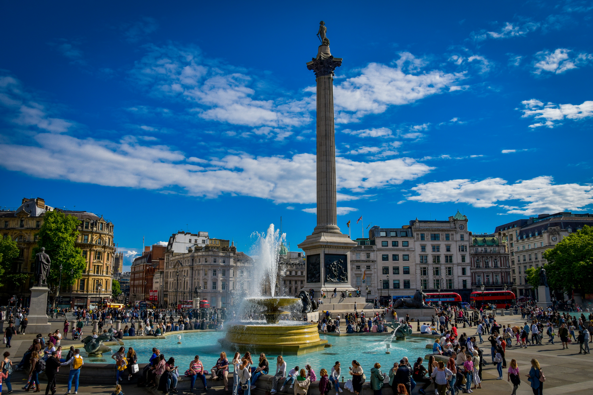

From Nelson's Column to the King's front door. Nine stops through the heart of power: Horse Guards, Banqueting House, Downing Street, Parliament, Westminster Abbey, Churchill's bunker and Buckingham Palace.
Nelson and Napoleon, a beheaded king, Guy Fawkes, Churchill's bunker and the pelicans of St James's Park. Not bad for an afternoon.
Enjoyed this tour?
Try London: St Paul's to the Tower
St Paul's Cathedral, the Millennium Bridge, Shakespeare's Globe, Borough Market, the Shard, HMS Belfast and the Tower of London. Nine stops along the Thames.
Start St Paul's TourEnter the unlock code from your Viator booking to access the full tour.